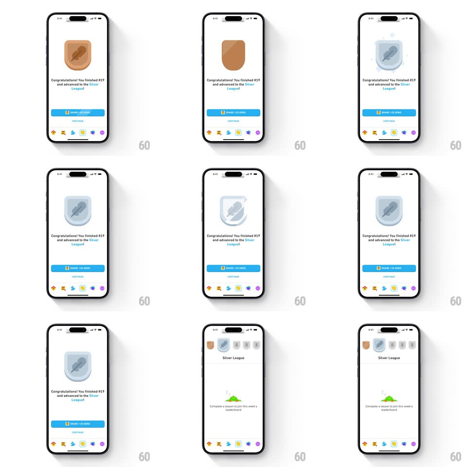

Media
Frame-by-frame

Rebuild this interaction 1:1: Duolingo's league advancement - the bronze league badge does a 3D horizontal flip, morphing into the silver badge mid-spin over "Congratulations! You finished #19 and advanced to the Silver League!", then the view slides up to the fresh Silver League leaderboard.

Rebuild this interaction 1:1: Duolingo's league advancement - the bronze league badge does a 3D horizontal flip, morphing into the silver badge mid-spin over "Congratulations! You finished #19 and advanced to the Silver League!", then the view slides up to the fresh Silver League leaderboard. ## Integration Integration: stack-agnostic spec - springs given as stiffness/damping, timed motions as duration + curve; map every value to your framework and animation library of choice. ## Scene White results screen: large league badge (bronze shield with a feather emblem), congratulatory copy with "Silver" highlighted, a "SHARE +10 GEMS" button, Continue link, and the tab bar. Destination: the Silver League leaderboard header with the badge row. ## Motion spec Pattern: 3D card-flip badge morph. - The bronze badge rotates around its vertical axis (rotateY 0 -> 90deg, 400ms, ease-in), shrinking to a sliver at the edge-on point. - At 90deg the asset swaps bronze -> silver; the rotation completes (90 -> 180deg->0 equivalent, 400ms, ease-out) as the silver badge opens up. - A soft glow pulse fires at the swap point (opacity 0 -> 0.5 -> 0, 300ms). - Copy and buttons are static during the flip; on Continue the whole screen slides up to reveal the leaderboard (spring ~380/26, 350ms), the new silver badge shrinking into the header row. ## Calibration - The flip must read as 3D - slight scale-down at edge-on (~0.9) and a shadow shift sell the depth. - The emblem (feather) is identical in both badges; only the metal changes. ## Reduced motion Badge crossfades bronze -> silver (250ms) with a small scale pulse. ## Don't miss - The swap happens exactly at edge-on - never show a half-bronze half-silver blend. - "Silver" in the copy is colored to match the new badge.